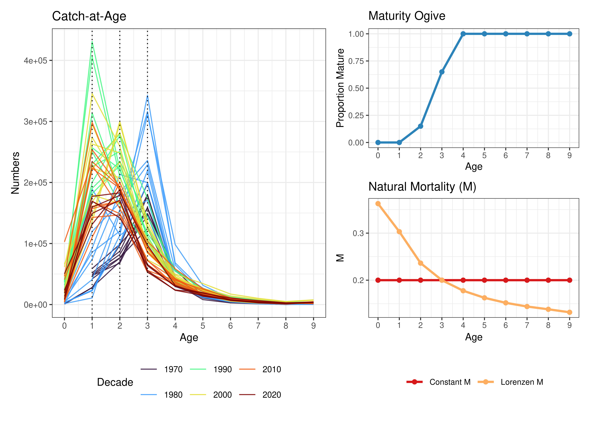
Assessing Mediterranean Swordfish Using the Assessment for All (a4a) Model
Following the continuity update of the 2020 Mediterranean swordfish (Xiphias gladius) assessment (SCRS/2026/169), this document explores different submodel configurations in the light of the new catch at age matrix, using the a4a statistical catch-at-age framework. The exploratory runs address historical data coverage, different natural mortality assumptions, and time-varying selectivity. Specifically, we evaluate the impact of assuming an age-dependent Lorenzen natural mortality vector compared to a constant natural mortality (\(M=0.2\)). Additionally, a tensor product interaction is incorporated into the fishing mortality submodel to capture dynamic selectivity changes across age classes over time.
KEYWORDS Swordfish, Mediterranean, Stock Assessment, a4a1. Introduction
Assessments of the Mediterranean swordfish stock are performed using a statistical catch-at-age model developed under the Assessment for All (a4a) Initiative of the European Commission Joint Research Centre (Jardim et al., 2015). The a4a framework utilizes catch-at-age data to derive estimates of historical population size and fishing mortality, allowing for flexible modeling of structural components through smooth functions (splines). a4a is a non-linear statistical catch-at-age model and is defined by submodels, which are the different parts that require structural assumptions. There are 5 submodels in operation: F-at-age, abundance indices catchability-at-age, recruitment, observation variance of catch and abundance indices and population’s age structure in the first year. Modeling assumptions include: Baranov’s equation for the catches, exponential decay of the population numbers and log-normality of catch and abundance indices errors.
While the continuity run (SCRS/2026/169) maintained the strict structural assumptions of the 2020 assessment, preliminary analyses indicated that different submodel configuration could improve model diagnostics and biological realism. In particular, the assumption of a constant natural mortality rate across all ages may not accurately reflect the higher mortality experienced by younger, smaller individuals. Furthermore, changes in fleet dynamics and targeting over the assessment period suggest that a separable age-year effect, which assumes constant selectivity over time for fishing mortality, might be overly restrictive.
This document presents two candidate models for the 2026 assessment: one assuming a constant natural mortality vector (\(M=0.2\)), and another applying an age-differentiated natural mortality vector derived using the Lorenzen formula. Both models incorporate a tensor product to model time-varying selectivity, starting from 1985 to ensure data quality and stability.
2. Materials and methods
2.1 Input Data
The available catch-at-age (CAA) data covers the period 1985–2024. A plus group was set at age 9, which improved the stability of the different models tested and reduced residuals in catch-at-age numbers. The reference fishing mortality (\(\bar{F}\)) was averaged over ages 1-4.
Five standardized CPUE series were considered as tuning indices: Greek longliners (GR_LL), Moroccan longliners (MO_LL), Spanish longliners (SP_LL), Ligurian longliners (LI_LL), and Sicilian longliners (SI_LL). These indices were considered representative of ages 1-4.
Two structural assumptions for natural mortality (\(M\)) were evaluated (Figure @ref(fig:inputData)):
- Constant M: \(M = 0.2\) for all ages.
- Lorenzen M: Age-differentiated mortality, characterized by higher mortality at younger ages.
Maturity was specified as an ogive, with fish beginning to mature at age 2 and reaching full maturity by age 4.
2.2 Model Specifications
The two primary candidate runs cover the period 1985–2024 using the identical model structure, differing only in their natural mortality vectors.
The fishing mortality (\(F\)) submodel includes a tensor product interaction (ti(year, age)) to accommodate changes in selectivity over time, combined with smoothers for year and age main effects: \[F \sim s(\text{year}, k = 20) + s(\text{age}, k = 8) + ti(\text{year, age}, k = c(6, 5))\]
The recruitment (\(R\)) submodel uses a temporal smoother: \[R \sim s(\text{year}, k = 20)\]
For catchability (\(q\)), constant catchability was assumed for the Greek, Spanish, and Sicilian longlines (\(\sim 1\)), while a smoother over time (\(\sim s(\text{year}, k = 3)\)) was applied to the Moroccan and Ligurian indices to account for identified trends.
The observation variance (\(vmod\)) and initial age structure (\(n1mod\)) were kept the same as the default settings.
2.3 Sensitivity Runs
In addition to the two primary candidate models, two sensitivity analyses were conducted to evaluate the robustness of the assessment to historical data inputs and index selection:
Sensitivity 1 (1978–2024): This run explores the impact of extending the time series back to 1978, prior to the start of the tuning indices using Constant \(M\). The fishing mortality submodel was slightly modified to accommodate the longer time series by increasing the temporal spline knots to \(k=25\).
Sensitivity 2 (Extra Indices): This run maintains the 1985–2024 period and Constant \(M\) assumption but incorporates two additional historical abundance indices: Sicilian Gillnet (
SI_GN) and Ligurian Surface Longline (LI_SUR). Catchability for these extra historical indices was modeled as constant (\(\sim 1\)) for the Sicilian and with a year effect for the Ligurian (\(\sim s(\text{year}, k = 5)\)).
3. Results
3.1 Stock Trajectories
The estimated trajectories for Recruitment, Spawning Stock Biomass (SSB), Catch, and Fishing Mortality (F averaged over ages 1-4) for the two candidate runs (1985 Constant M and 1985 Lorenzen M) are presented in Figure @ref(fig:plot-all-comp).
Both models successfully capture the historical catch trends. The inclusion of the Lorenzen \(M\) vector scaled the absolute estimates of recruitment and SSB compared to the constant \(M\) assumption, while producing highly correlated relative trends. Because the Lorenzen \(M\) assumes higher natural mortality for younger age classes, the model must estimate a much larger recruitment to support the observed catch history of those cohorts. Despite these absolute scaling differences, both models indicate a similar trajectory.
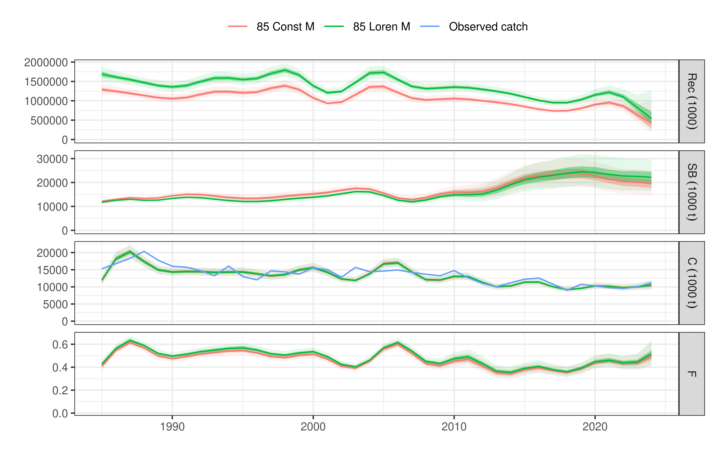
The resulting time-varying selectivity is evident in the estimated fishing mortality surface, demonstrating that the inclusion of the tensor product effectively allowed the model to adjust age-specific vulnerabilities over time (Figure @ref(fig:harvest3D)). There is a high F estimated for in the beginning of the time series for the oldest age (age 9).
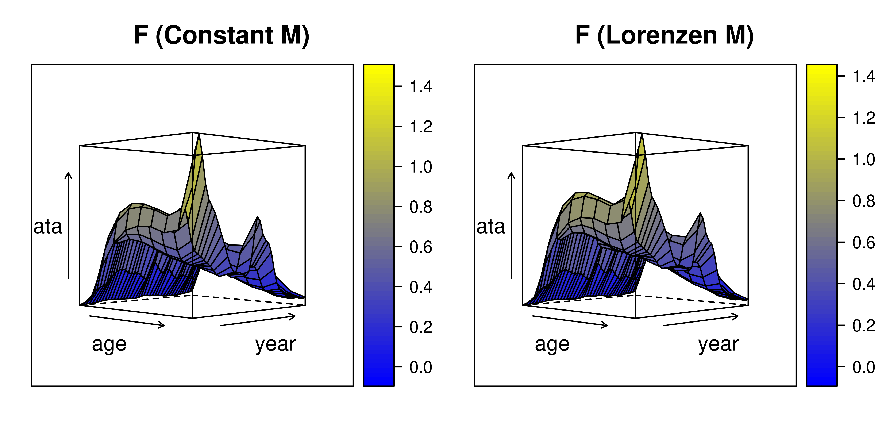
3.2 Model Diagnostics: Constant M Candidate Run
To evaluate the goodness-of-fit for the Constant M candidate run, standardized log-residuals were analyzed for both the catch-at-age matrix and the tuning indices. Furthermore, aggregated catch diagnostics were examined to ensure the model accurately predicts total removals.
The standardized residuals for the catch-at-age (Figure @ref(fig:diag-caa-res)) generally demonstrate that the tensor product in the \(F\) submodel captures the bulk of the shifting selectivity over time. However, a distinct non-stationary pattern remains evident in Age 3. The model consistently underestimates Age 3 catches during the early period (1985–1994), characterized by a block of strong positive residuals, before transitioning to slight overestimation (negative residuals) in the most recent decade. This localized residual structure suggests a historical shift in vulnerability or fleet targeting for this specific age class that the current ti(year, age) spline constraints are slightly over-smoothing. Despite this, the overall age structure remains stable without severe residual patterns.
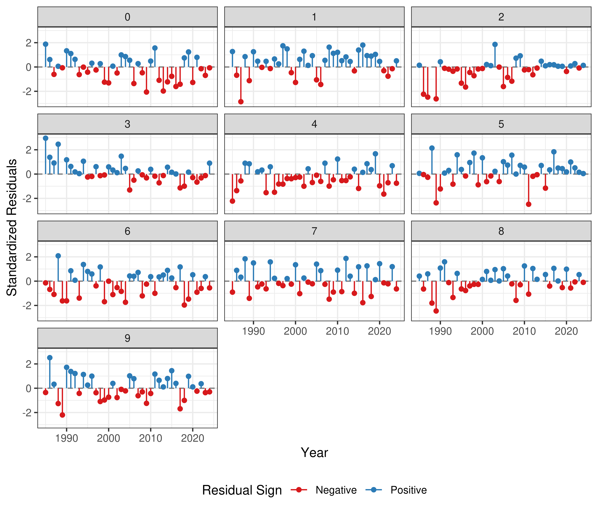
The CPUE index residuals (Figure @ref(fig:diag-idx-res)) display acceptable patterns.
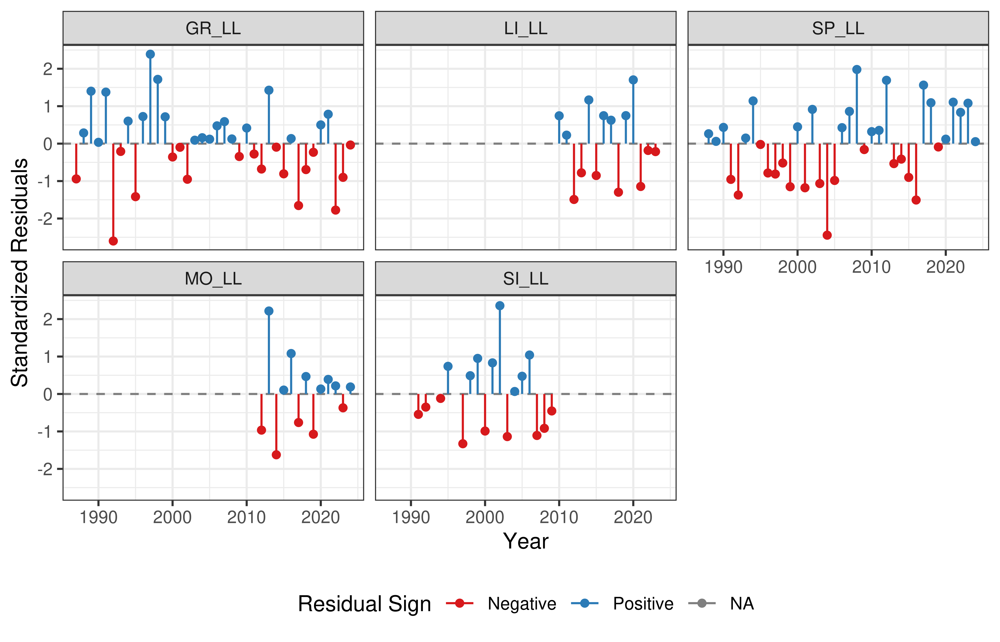
Finally, the aggregated catch diagnostics (Figure @ref(fig:aggr-catch)) confirm that the model predicts total removals reliably by decomposing the variance into three distinct statistical components:
- Observation Error: Reflects the inherent noise and sampling variance within the observed catch data.
- Estimation Error: Represents the structural uncertainty of the model’s fitted parameters (i.e., the variance of the expected values).
- Prediction Error: The convolution of both observation and estimation errors, representing the total uncertainty bounds of the model’s predictions.
Both estimation and prediction errors remain stationary over the time series, lacking any severe divergence or funneling. This confirms that the variance does not systematically inflate in recent years and that the model is statistically consistent in scaling the total catch in weight.
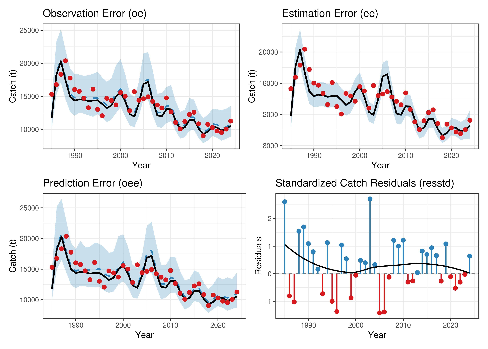
3.3 Retrospective Analysis: Constant M Candidate Run
A 5-year retrospective analysis was conducted to evaluate the stability of the model’s terminal estimates. The retrospective trajectories for the Constant M run (Figure @ref(fig:retro-85-c)) show tight alignment across the peels. Mohn’s rho (\(\rho\)) was calculated for both Spawning Stock Biomass (SSB) and Fishing Mortality (Fbar). The resulting rho values fall well within the acceptable bounds, indicating that the model’s terminal estimates are stable and not prone to severe retrospective revisions.
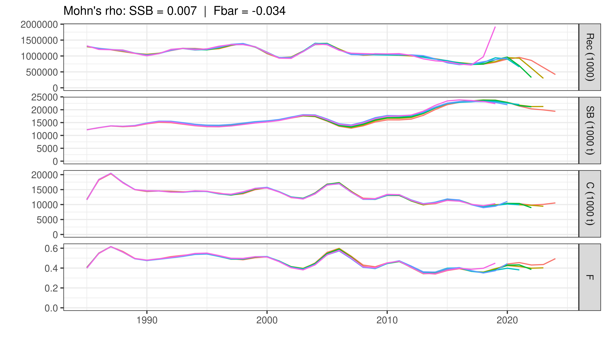
3.4 Model Diagnostics: Lorenzen M Candidate Run
To verify that introducing the age-dependent Lorenzen natural mortality vector did not degrade the model fit, the diagnostic suite is repeated for the Lorenzen M run (fit85_l).
The standardized log-residuals for catch-at-age (Figure @ref(fig:diag-caa-res-l)) and the CPUE tuning indices (Figure @ref(fig:diag-idx-res-l)) are nearly indistinguishable from the Constant M run. The Age 3 positive pattern in the beginning of the time series is persistent also in this run.
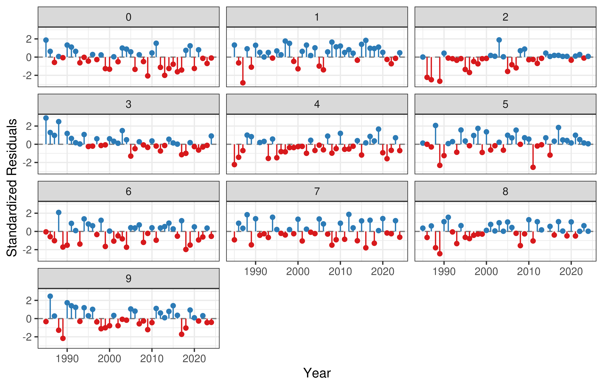
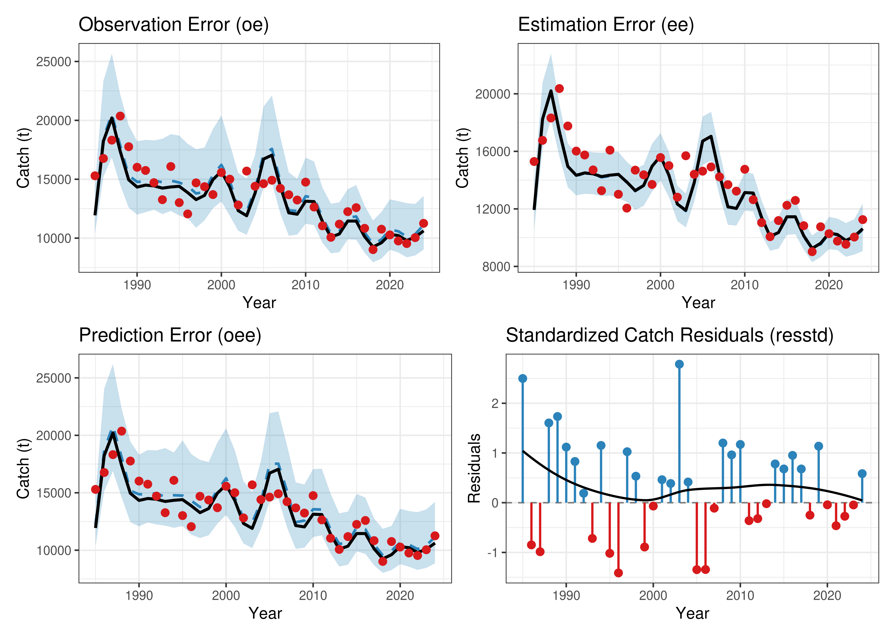
3.5 Retrospective Analysis: Lorenzen M Candidate Run
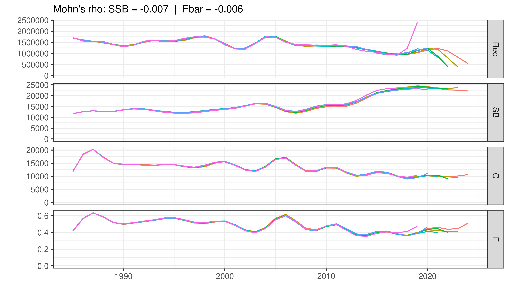
4. Reference Points and Stock Status for both Candidate runs
Biological reference points based on MSY were calculated utilizing a Beverton-Holt stock-recruitment relationship (steepness constrained by fixing \(b=100\)) (Table 1). Kobe phase plots (Figure @ref(fig:kobe)) summarize the temporal evolution of the stock relative to MSY benchmarks. Both candidate runs suggest that current fishing mortality is hovering near or below \(F_{MSY}\), and biomass is approaching or at \(B_{MSY}\).
| Metric | 1985 Constant M | 1985 Lorenzen M |
|---|---|---|
| FMSY | 0.344 | 0.342 |
| BMSY (t) | 48803.874 | 58484.973 |
| F2024 | 0.495 | 0.510 |
| B2024 (t) | 39062.288 | 42468.375 |
| F2024 / FMSY | 1.436 | 1.493 |
| B2024 / BMSY | 0.800 | 0.726 |
| MSY (t) | 11465.313 | 11591.307 |
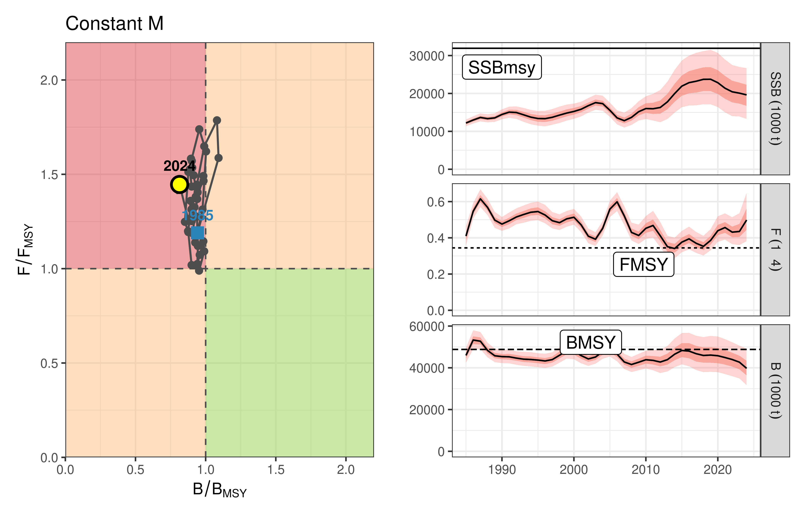
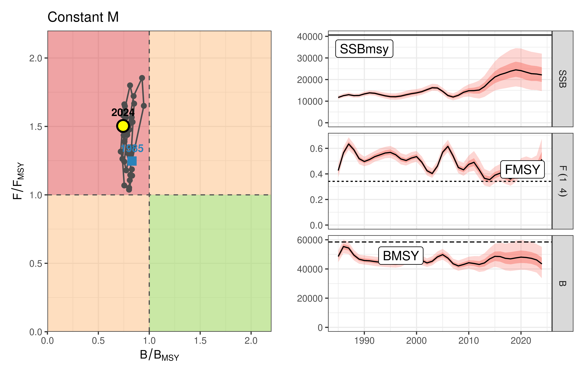
5. Sensitivity Runs
To evaluate the robustness of the assessment to historical data truncation and index selection, two sensitivity runs were evaluated. Sensitivity 1 extended the historical period back to 1978, while Sensitivity 2 maintained the 1985 start year but incorporated two additional historical tuning indices (Sicilian Gillnet and Ligurian Surface Longline).
The trajectories of both sensitivity runs (Figure @ref(fig:sens-plots)) align closely with the 1985 baseline candidate run. The inclusion of the early historical catch (1978-1984) and the extra indices shifts the absolute scale of the historical biomass slightly, but the terminal estimates of fishing mortality and stock depletion remain highly consistent. This indicates that the 1985 truncation and the selection of the 5 core indices provide a stable and representative baseline.
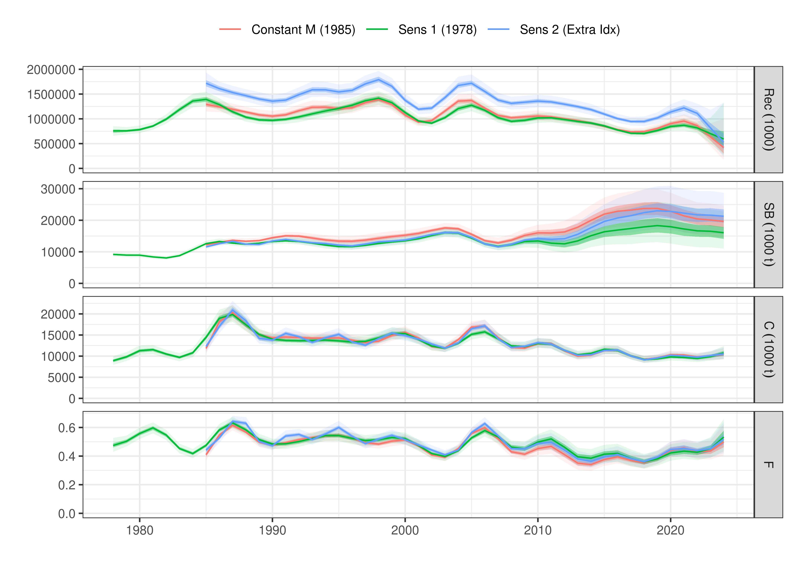
6. Discussion
The exploratory models address specific structural constraints present in the continuity run by enabling flexible selectivity tracking and examining an alternative biological scenario for natural mortality. Incorporating the tensor product interaction resolves residual patterns in catch-at-age compared to simple additive age-year structures, allowing for shifting fleet selection to be modeled statistically rather than fixed a priori.
References
Anon. (2020). Report of the 2020 ICCAT Mediterranean swordfish stock assessment meeting. Collect. Vol. Sci. Pap. ICCAT, 77(3): 179-316.
Jardim, E., Millar, C. P., Mosqueira, I., Scott, F., Osio, G. C., Ferretti, M., Alzorriz, N., Orio, A. (2015). What if stock assessment is as simple as a linear model? The a4a initiative. ICES Journal of Marine Science, 72(1), 232-236.
Mantopoulou-Palouka, D., Tserpes, G. (2020). Assessment of the Mediterranean Swordfish stock by means of Assessment for All. Collect. Vol. Sci. Pap. ICCAT, 77(3): 482-507.